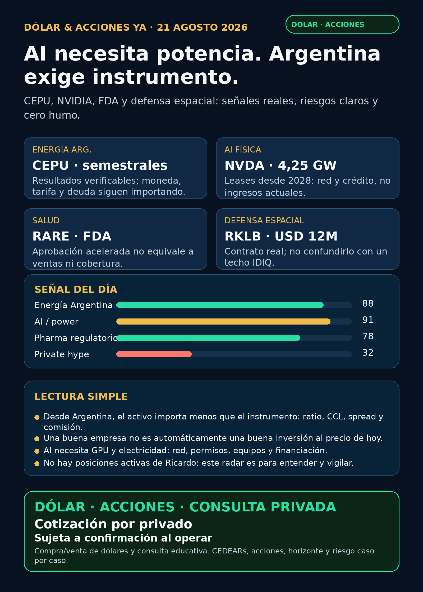

Dólar & Acciones YA — 21/08/2026
Corte: 21/08/2026, 08:46 (America/Argentina/Mendoza). Edición educativa: no es asesoramiento financiero ni una indicación de compra/venta. Cartera de Ricardo: liquidada, devuelta y terminada; no hay posiciones activas ni P&L que reportar. Política vigente: texto/visual solamente; no se generó audio.
Lectura simple del día
El radar de hoy tiene una idea menos glamorosa y más útil: la historia de AI no se termina en la GPU. Para que un data center funcione hacen falta energía, red, permisos, subestaciones, construcción y crédito. El 8-K de NVIDIA sobre Ohio habla de unos 4,25 GW de carga IT vinculados a leases desde 2028; no son ventas actuales ni megawatts ya encendidos. Por eso el “segundo peaje de AI” sigue siendo eléctrico, físico y regulado.
En Argentina apareció un recibo operativo concreto: Central Puerto (CEPU) presentó resultados semestrales no auditados al 30/06. Sirve para mirar una generadora por ejecución, capacidad y regulación, no para sacar una conclusión rápida de precio. En salud, Ultragenyx (RARE) tiene una aprobación acelerada real; también enseña que FDA aprobado no significa automáticamente adopción, cobertura ni ingresos.
Argentina: dólar e instrumento antes que ticker
Ranking educativo por calidad de señal — no es ranking de compra
1) CEPU — resultados locales que exigen comparar bien
CEPU en NYSE. Está en radar; no implica compra.2) NVDA + D/NEE — AI es potencia, infraestructura y aprobación regulatoria
NVDA, D y NEE son instrumentos públicos. Argentina: CEDEAR, ratio, CCL, spread, comisiones y disponibilidad real deben verificarse antes de una decisión humana.3) RARE — aprobación acelerada: producto regulado, no ventas automáticas
DTX401) para GSDIa en pacientes de ocho años o más.RARE cotiza en Nasdaq. Argentina: ruta CEDEAR/ADR, liquidez y costos pendientes de verificar. Es radar biotech de alto riesgo, no recomendación.4) RKLB — defensa espacial con recibo, no con techo de marketing
RKLB Nasdaq. Argentina: acceso local, ratio, spread y costos no verificados en este corte. Riesgos: ejecución, integración de Iridium, deuda y valuación.Energía, red y power hardware
CEPU es la señal local de hoy. YPF, PAM/PAMP, TGS, VIST y CEPU fueron revisadas; fuera de CEPU no apareció filing primario operativo fuerte en esta ventana. Están en radar, no son una orden de compra.GEV, VST, CEG, ETN, PWR, HUBB, VRT, MOD, Hitachi/Hitachi Energy, Siemens Energy (ENR.DE, no Siemens AG), HD Hyundai Electric y Hyosung son vigilancia global. Virginia Transformer y Delta Star son privadas: no accionables de forma directa.Pharma y salud
NVO, LLY): revisados. Hubo notas sobre competencia y estudios, pero no apareció aprobación FDA/EMA, cambio de label, M&A, guidance o Phase III primario fresco que cambie la tesis. La recompra de NVO del 18/08 es asignación de capital, no catalizador clínico., MRK, AMGN, AZN`: revisadas, sin hito de producto primario nuevo fuerte en esta ventana.Watchlist base — seguimiento rápido
NVDA y RKLB, detalladas arriba.PLTR, TSM, MU, GOOGL/GOOG, AAPL, HOOD, TSLA, ASML, AVGO y CBRS. En la ventana predominaron formularios de tenencia/transferencias o notas secundarias; eso no prueba demanda, revenue ni moat nuevo.GLD, GOLD y B son objetos/instrumentos distintos. Sin identificar cuál se consulta, no corresponde publicar precio ni rendimiento.Carriles revisados para no quedar presos de una lista
AVAV, GE, RTX, LMT, NOC, GD, HWM, KTOS, BA, ITA y XAR revisados. El recibo visible es RKLB en defensa espacial; el resto quedó revisado sin señal primaria nueva fuerte.SPCX y proxies privados revisados. Sin filing primario sustantivo nuevo verificable sobre precio, lock-ups, float, liquidez o acceso. No accionable por ahora.DXYZ, ARKVX, AGIX, XOVR, VCX, FAPMI/Forge y RVII no tienen en este corte un paquete verificable de listing, NAV, premium/descuento, holdings, fees, volumen y acceso. No accionable / no verificado.Red flags para ignorar
1. Un número de gigawatts en un lease futuro no es facturación actual ni capacidad operativa.
2. Un bill credit condicionado a aprobación regulatoria no es una sinergia realizada.
3. Aprobación acelerada no equivale a ventas: faltan acceso, cobertura, seguimiento y adopción.
4. El techo de un IDIQ no es un contrato adjudicado ni ingresos garantizados.
5. Un filing aislado de un wrapper no prueba exposición directa a SpaceX, OpenAI u otra privada.
Qué mirar después
1. CEPU: moneda funcional, deuda, capex, tarifas, precio/volumen local y ADR antes de convertir H1 en conclusión de valuación.
2. NVDA/Ohio: cronograma, contraparte, financiación, condiciones y potencia realmente disponible antes de 2028.
3. D + NEE: aprobación regulatoria, términos definitivos y ejecución; separar siempre M&A de demanda AI real.
4. RARE: acceso comercial, seguridad y progreso de obligaciones poscomercialización.
5. Cualquier CEDEAR: subyacente en USD, CCL implícito, ratio, spread, volumen y comisiones el mismo día de una decisión humana.
Servicio privado
Dólar · Acciones · Consulta privada. Si querés ordenar dólar, CEDEARs, acciones, horizonte y riesgo, escribime por privado y lo vemos caso por caso. Cotización sujeta a confirmación al momento de operar.
Disclaimer: este reporte es research educativo para decisión humana. No es asesoramiento financiero personalizado ni recomendación de compra o venta.